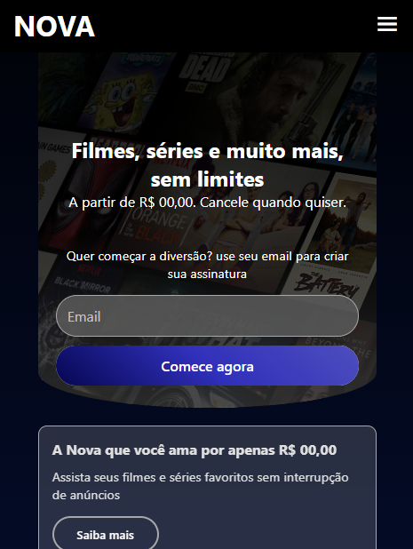

OLÁ, ME CHAMO JACKSON.
SOBRE
Desenvolvedor front-end em formação, estudando há um ano com foco e consistência. Embora minha base seja no front-end, já molho os pés no back-end. Sem experiência profissional ainda, mas pronto para agarrar oportunidades e fazer a diferença.
PROJETO

uma cópia de site da netflix, me guiando apenas pela própria página. é bem simples mas está totalmente responsivo, e com adição de um menu para versões mobile.